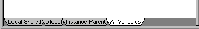
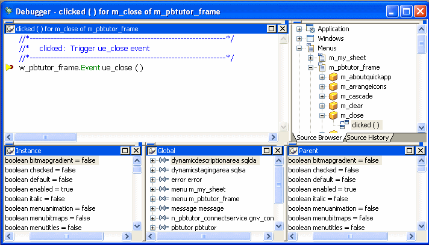
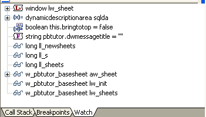
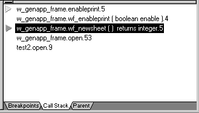
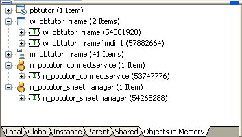

Sometimes an application does not behave the way you think it will. Perhaps a variable is not being assigned the value you expect, or a script does not perform as desired. In these situations, you can examine your application by running it in debug mode.
When you run the application in debug mode, PowerBuilder stops execution before it executes a line containing a breakpoint (stop). You can then step through the application and examine its state.
 To debug an application:
To debug an application:
Open the debugger.
Set breakpoints at places in the application where you have a problem.
Run the application in debug mode.
When execution is suspended at a breakpoint, look at the values of variables, examine the properties of objects in memory and the call stack, or change the values of variables.
Step through the code line by line.
As needed, add or modify breakpoints as you run the application.
When you uncover a problem, fix your code and run it in the debugger again.
 Debugging distributed applications You can debug a PowerBuilder component deployed to EAServer. For more information,
see the chapter on building EAServer components
in Application Techniques
.
Debugging distributed applications You can debug a PowerBuilder component deployed to EAServer. For more information,
see the chapter on building EAServer components
in Application Techniques
.
 To open the debugger:
To open the debugger:
The Debug button opens the debugger for the last debugged or run target. The name of the current target is displayed in the Debug button tool tip. The Select and Debug button opens a dialog box that lets you select the target to be debugged.
The debugger contains several views. Each view shows a different kind of information about the current state of your application or the debugging session. Table 32-1 summarizes what each view shows and what you can do from that view.
The default debugger layout contains a separate view for each variable type in a stacked pane. You can combine two or more Variables views in a single pane. For example, you might want to combine local and global variables in a single view that you keep at the top of the stacked pane.
 To display multiple variable types in a single
view:
To display multiple variable types in a single
view:
Display the pop-up menu for a pane that contains a Variables view you want to change.
Click the names of the variable types you want to display.
A checkmark displays next to selected variable types. The pop-up menu closes each time you select a variable type or clear a checkmark, so you need to reopen the menu to select an additional variable type.
When you select or clear variable types, the tab for the pane changes to show the variable types displayed on that pane.

A breakpoint is a point in your application code where you want to interrupt the normal execution of the application while you are debugging. If you suspect a problem is occurring in a particular script or function call, set a breakpoint at the beginning of the script or at the line where the function is called.
When you close the debugger, any breakpoints you set are written to a file called targetname.usr.opt in the same directory as the target, where targetname is the name of the target. The breakpoints are available when you reopen the debugger. When you clear breakpoints, they are permanently removed from the usr.opt file (if it is not marked readonly).
 Sharing targets If multiple developers use the same target without using source
control (a practice that is not recommended) individual developers
can save the breakpoints they set in a separate file by adding the
following entry to the [pb] section of their pb.ini file:
Sharing targets If multiple developers use the same target without using source
control (a practice that is not recommended) individual developers
can save the breakpoints they set in a separate file by adding the
following entry to the [pb] section of their pb.ini file:
UserOptionFileExt=abcwhere abc might be the developer's name or initials. Breakpoints set by the developer would be saved in a file called appname_abc.usr.opt.
This procedure describes setting a breakpoint in the Source view in the debugger. You can also set a breakpoint by selecting Add Breakpoint from the pop-up menu in the Script view when you are not running the debugger.
 To set a breakpoint on a line in a script:
To set a breakpoint on a line in a script:
Display the script in a Source view and place the cursor where you want to set the breakpoint.
For how to change the script shown in the Source view, see "Using the Source view".
Double-click the line or select Add Breakpoint from the pop-up menu.
PowerBuilder sets a breakpoint and a red circle displays at the beginning of the line. If you select a line that does not contain executable code, PowerBuilder sets the breakpoint at the beginning of the next executable statement.
Breakpoints can be triggered when a statement has been executed a specified number of times (an occasional breakpoint), when a specified expression is true (a conditional breakpoint), or when the value of a variable changes.
You use the Edit Breakpoints dialog box to set and edit occasional and conditional breakpoints. You can also use it to set a breakpoint when the value of a variable changes. The Edit Breakpoints dialog box opens when you:
If you want to check the progress of a loop without interrupting execution in every iteration, you can set an occasional breakpoint that is triggered only after a specified number of iterations. To specify that execution stops only when conditions you specify are met, set a conditional breakpoint. You can also set both occasional and conditional breakpoints at the same location.
 To set an occasional or conditional breakpoint:
To set an occasional or conditional breakpoint:
On the Location tab in the Edit Breakpoints dialog box, specify the script and line number where you want the breakpoint.
You can select an existing location or select New to enter a new location.
 Set a simple breakpoint first You must specify a line that contains executable code. Set
a simple breakpoint on the line before opening the Edit Breakpoints
dialog box to ensure the format and line number are correct.
Set a simple breakpoint first You must specify a line that contains executable code. Set
a simple breakpoint on the line before opening the Edit Breakpoints
dialog box to ensure the format and line number are correct.
Specify an integer occurrence, a condition, or both.
The condition must be a valid boolean PowerScript expression (if it is not, the breakpoint is always triggered). PowerBuilder displays the breakpoint expression in the Edit Breakpoints dialog box and in the Breakpoints view. When PowerBuilder reaches the location where the breakpoint is set, it evaluates the breakpoint expression and triggers the breakpoint only when the expression is true.
You can interrupt execution every time the value of a variable changes. The variable must be in scope when you set the breakpoint.
 To set a breakpoint when a variable changes:
To set a breakpoint when a variable changes:
The new breakpoint displays in the Breakpoints view and in the Edit Breakpoints dialog box if it is open. PowerBuilder watches the variable at runtime and interrupts execution when the value of the variable changes.
If you want to bypass a breakpoint for a specific debugging session, you can disable it and then enable it again later. If you no longer need a breakpoint, you can clear it.
 To disable a breakpoint:
To disable a breakpoint:
The red circle next to the breakpoint is replaced with a white circle.
You can enable a disabled breakpoint from the pop-up menus or by clicking the white circle.
 Disabling all breakpoints To disable all breakpoints, select Disable All from the pop-up
menu in the Breakpoints view.
Disabling all breakpoints To disable all breakpoints, select Disable All from the pop-up
menu in the Breakpoints view.
 To clear a breakpoint:
To clear a breakpoint:
The red circle next to the breakpoint disappears.
 Clearing all breakpoints To clear all breakpoints, select Clear All in the Edit Breakpoints
dialog box or from the pop-up menu in the Breakpoints view.
Clearing all breakpoints To clear all breakpoints, select Clear All in the Edit Breakpoints
dialog box or from the pop-up menu in the Breakpoints view.
After you have set some breakpoints, you can run the application in debug mode. The application executes normally until it reaches a statement containing a breakpoint. At this point it stops so that you can examine the application. After you do so, you can single-step through the application, continue execution until execution reaches another breakpoint, or stop the debugging run so that you can close the debugger and change the code.
 To run an application in debug mode:
To run an application in debug mode:
If necessary, open the debugger by clicking the Debug or Select and Debug button.
The Debug button opens the debugger for the target you last ran or debugged. Use the Select and Debug button if you want to debug a different target in the workspace.
Click the Start button in the PainterBar or select Debug>Start from the menu bar.
The application starts and runs until it reaches a breakpoint. PowerBuilder displays the debugger, with the line containing the breakpoint displayed in the Source view. The yellow arrow cursor indicates that this line contains the next statement to be executed. You can now examine the application using debugger views and tools.
For more information, see "Examining an application at a breakpoint" and "Stepping through an application".
 To continue execution from a breakpoint:
To continue execution from a breakpoint:
Click the Continue button in the PainterBar or select Debug>Continue from the menu bar
Execution begins at the statement indicated by the yellow arrow cursor and continues until the next breakpoint is hit or until the application terminates normally.
 To terminate a debugging run at a breakpoint:
To terminate a debugging run at a breakpoint:
Click the Stop Debugging button in the PainterBar or select Debug>Stop from the menu bar
PowerBuilder resets the state of the application and all the debugger views to their state at the beginning of the debugging run. You can now begin another run in debug mode, or close the debugger.
 Cleaning up When you terminate a debugging run or close the debugger without terminating
the run, PowerBuilder executes the application's close
event and destroys any objects, such as autoinstantiated local variables,
that it would have destroyed if the application had continued to
run and exited normally.
Cleaning up When you terminate a debugging run or close the debugger without terminating
the run, PowerBuilder executes the application's close
event and destroys any objects, such as autoinstantiated local variables,
that it would have destroyed if the application had continued to
run and exited normally.
When an application is suspended at a breakpoint, use QuickWatch, TipWatch, and the Variables, Watch, Call Stack, and Objects in Memory views to examine its state.
 About icons used in debugging views The Variables, Watch, and Objects in Memory views use many
of the icons used in the PowerBuilder Browser as well as some additional
icons: I represents an Instance; F, a field; A, an array; and E,
an expression.
About icons used in debugging views The Variables, Watch, and Objects in Memory views use many
of the icons used in the PowerBuilder Browser as well as some additional
icons: I represents an Instance; F, a field; A, an array; and E,
an expression.
The debugger provides three different ways to examine the values of variables: TipWatch, QuickWatch, and the Variables view.
TipWatch is a quick way to get the current value of a variable of a simple datatype. When execution stops at a breakpoint, you can place the edit cursor over a variable in the Source view to display a pop-up tip window that shows the current value of that variable. You can also select a simple expression to display its current value.
TipWatch has some limitations: if the variable you select is an object type, the tip window shows only an internal identifier. For array types, it shows {...} to indicate that more information is available. To show complete information for object type and array type variables, use QuickWatch instead.
TipWatch does not evaluate function, assignment, or variable value modification expressions. If TipWatch cannot parse the string you select, the pop-up window does not display.
 Remote debugging When you are debugging a remote component, Tip Watch does
not evaluate expressions or indirect variables.
Remote debugging When you are debugging a remote component, Tip Watch does
not evaluate expressions or indirect variables.
QuickWatch provides the current value of simple variables and detailed information about object variables, including the values of all fields in the variable. QuickWatch can also evaluate function expressions, and you can use it to change the values of variables, evaluate expressions, and add variables and expressions to the Watch view.
 Exercise caution when evaluating expressions QuickWatch evaluates all kinds of expressions, including functions,
in local debugging. If you select a function and activate QuickWatch,
the function is executed. This may have unexpected results. For
example, if you select dw_1.print() and
activate QuickWatch, the DataWindow is printed.
Exercise caution when evaluating expressions QuickWatch evaluates all kinds of expressions, including functions,
in local debugging. If you select a function and activate QuickWatch,
the function is executed. This may have unexpected results. For
example, if you select dw_1.print() and
activate QuickWatch, the DataWindow is printed.
 To open the QuickWatch dialog box:
To open the QuickWatch dialog box:
When execution stops at a breakpoint, move the edit cursor to a variable or select an expression in the Source view, and do one of the following:
 To change the value of a variable from the QuickWatch
dialog box:
To change the value of a variable from the QuickWatch
dialog box:
Select an item in the tree view and do one of the following:
In the Modify Variable dialog box, type a new value for the variable in the New Value box, or select the Null check box to set the value of the variable to null, and click OK.
Close the QuickWatch dialog box and continue debugging the application with the variable set to the new value.
 To evaluate an expression in the QuickWatch dialog
box and add it to the Watch view:
To evaluate an expression in the QuickWatch dialog
box and add it to the Watch view:
Change the variable or expression in the Expression box.
Click Reevaluate to display the new value in the tree view.
(Optional) Click Add Watch to add the expression to the Watch view.
 Remote debugging When you are debugging a remote component, expressions and
indirect variables are not evaluated, and you cannot modify variable
values.
Remote debugging When you are debugging a remote component, expressions and
indirect variables are not evaluated, and you cannot modify variable
values.
Each Variables view shows one or more types of variables in an expandable outline. Double-click the variable names or click on the plus and minus signs next to them to expand and contract the hierarchy. If you open a new Variables view, it shows all variable types.
In the following illustration, an application has stopped at a breakpoint in the script for the Clicked event for the Close menu item on a frame's File menu. The Instance Variables view shows the properties of the current instance of the Close menu item. The Parent Variables view shows the properties of its parent, an instance of the File menu. Navigating through the hierarchy in the Global Variables view shows the same objects.

The Watch view lets you monitor the values of selected variables and expressions as the application runs.
If the variable or expression is in scope, the Watch view shows its value. Empty quotes indicate that the variable is in scope but has not been initialized. A pair of glasses in the Watch view indicates that the variable or expression is not in scope.

You can select variables you want to watch as the application runs by copying them from a Variables view. You can also set a watch on any PowerScript expression. When you close the debugger, any watch variables and expressions you set are saved.
 Using QuickWatch You can also add variables and expressions to the Watch view
from the QuickWatch dialog box. See "QuickWatch".
Using QuickWatch You can also add variables and expressions to the Watch view
from the QuickWatch dialog box. See "QuickWatch".
 To add a variable to the Watch view:
To add a variable to the Watch view:
Select the variable in the Variables view.
PowerBuilder adds the variable to the watch list.
 To add an expression to the Watch view:
To add an expression to the Watch view:
Select Insert from the pop-up menu.
Type any valid PowerScript expression in the New Expression dialog box and click OK.
PowerBuilder adds the expression to the watch list.
 To edit a variable in the Watch view:
To edit a variable in the Watch view:
Select the variable you want to edit.
Double-click the variable, or select Edit Variable from the pop-up menu.
Type the new value for the variable in the Modify Variable dialog box and click OK.
 To edit an expression in the Watch view:
To edit an expression in the Watch view:
Select the expression you want to edit.
Double-click the expression, or select Edit Expression from the pop-up menu.
Type the new expression in the Edit Expression dialog box and click OK.
 To clear variables and expressions from the Watch
view:
To clear variables and expressions from the Watch
view:
Select the variable or expression you want to delete.
 To clear all variables and expressions from the
Watch view:
To clear all variables and expressions from the
Watch view:
Select Clear All from the pop-up menu
The Call Stack view shows the sequence of function calls leading up to the script or function that was executing at the time of the breakpoint. Each line in the Call Stack view displays the name of the script and the line number from which the call was made. The yellow arrow shows the script and line where execution was suspended.
You can examine the context of the application at any line in the call stack.
 To show a different context from the Call Stack
view:
To show a different context from the Call Stack
view:
Select a line in the Call Stack view.
A green arrow indicates the script that you selected. The Source view shows the script and line number you selected, and the Variables and Watch views show the variables and expressions in scope in that context.

The Objects in Memory view shows an expandable list of objects currently in memory. Double-click the name of an object or click the plus sign next to it to view the names and memory locations of instances of each object and property values of each instance.

The Source view displays the full text of a script. As you run or step through the application, the Source view is updated to show the current script with a yellow arrow indicating the next statement to be executed.
You can open more than one source view. If there are multiple source views open, only the first one opened is updated to show the current script when the context of an application changes.
When text is selected in the Source view, you can select Copy from the pop-up menu in the Source view to copy the string to the clipboard. You can then paste the string into another dialog box to search for the string, insert a watch, or add a conditional breakpoint.
From the pop-up menu, you can navigate backward and forward through the scripts that have been opened so far, open ancestor and dependent scripts, and go to a specific line in the current script. There are several other ways to change the script from other views or from the menu bar.
 To change the script displayed in a Source view:
To change the script displayed in a Source view:
 To find a specified string in the Source view:
To find a specified string in the Source view:
Select Find from the pop-up menu, or select Edit>Find from the menu bar.
The Find Text dialog box opens.
Type the string in the Find box and check the search options you want.
The Source Browser shows all the objects in your application in an expandable hierarchy. It provides a view of the structure of the application and a quick way to open any script in the Source view.
 To open a script from the Source Browser:
To open a script from the Source Browser:
Double-click the object that the script belongs to or click the plus sign next to the object to expand it.
When you double-click or select Open Source, a new Source view opens if there was none open. If several Source views are open, the script displays in the view that was used last.
The Source History view lists all the scripts that have been opened in the current debugging session. Use the same techniques as in the Source Browser view to display a selected script in the Source view.
 Source History limit The Source History view shows up to 100 scripts and is not cleared
at the end of each debugging run. It is cleared when you close the
debugger, or you can clear the list from the pop-up menu.
Source History limit The Source History view shows up to 100 scripts and is not cleared
at the end of each debugging run. It is cleared when you close the
debugger, or you can clear the list from the pop-up menu.
When you have stopped execution at a breakpoint, you can use several commands to step through your application code and use the views to examine the effect of each statement. As you step through the code, the debugger views change to reflect the current context of your application and a yellow arrow cursor indicates the next statement to be executed.
 Updating the Source view When the context of your application changes to another script,
the Source view is updated with the new context. If you have multiple
Source views open, only the first one opened is updated.
Updating the Source view When the context of your application changes to another script,
the Source view is updated with the new context. If you have multiple
Source views open, only the first one opened is updated.
You can use either Step In or Step Over to step through an application one statement at a time. They have the same result except when the next statement contains a call to a function. Use Step In if you want to step into a function and examine the effects of each statement in the function. Use Step Over to execute the function as a single statement.
 To step through an application entering functions:
To step through an application entering functions:
Click the Step In button in the PainterBar, or select Debug>Step In from the menu bar.
 To step through an application without entering
functions:
To step through an application without entering
functions:
Click the Step Over button in the PainterBar, or select Debug>Step Over from the menu bar.
 Using shortcut keys To make it easier to step through your code, the debugger
has standard keyboard shortcuts for Step In, Step Out, Step Over,
Run To Cursor, and Continue. If you prefer to use different shortcut
key combinations, select Tools>Keyboard Shortcuts to define
your own.
Using shortcut keys To make it easier to step through your code, the debugger
has standard keyboard shortcuts for Step In, Step Out, Step Over,
Run To Cursor, and Continue. If you prefer to use different shortcut
key combinations, select Tools>Keyboard Shortcuts to define
your own.
If you step into a function where you do not need to step into each statement, use Step Out to continue execution until the function returns.
 To step out of a function:
To step out of a function:
Click the Step Out button in the PainterBar, or select Debug>Step Out from the menu bar.
As you step through an application, you might reach sections of code that you are not interested in examining closely. The code might contain a large loop, or it might be well-tested code that you are confident is free of errors. You can use Run To Cursor to select a statement further down in a script or in a subsequent script where you want execution to stop.
 To step through multiple statements:
To step through multiple statements:
Click on the line in the script where you want to resume single stepping.
Click the Run To Cursor button in the PainterBar, or select Debug>Run To Cursor from the menu bar.
PowerBuilder executes all intermediate statements and the yellow arrow cursor displays at the line where you set the cursor.
You can use Set Next Statement to bypass a section of code that contains a bug, or to test part of an application using specific values for variables. Execution continues from the statement where you place the cursor. Be cautious when you use Set Next Statement, because results may be unpredictable if, for example, you skip code that initializes a variable.
 To set the next statement to be executed:
To set the next statement to be executed:
Click on the line in the script where you want to continue execution.
Click the Set Next Statement button in the PainterBar,
or select
Debug>Set Next Statement from the menu
bar.
If necessary, change the values of variables.
Continue execution using Continue, Step In, or Step Over.
If you select Continue, PowerBuilder begins execution at the statement you specified and continues to the next breakpoint. If you select Step In or Step Over, PowerBuilder sets the next statement and displays the yellow arrow cursor at the line where you set the cursor.
As you step through the application, you can change the values of variables that are in scope. You may want to do this to examine different flows through the application, to simulate a condition that is difficult to reach in normal testing, or if you are skipping code that sets a variable's value.
 Limitations You cannot change the values of enumerated variables, and
you cannot change the value of any variable when you are debugging
a remote component.
Limitations You cannot change the values of enumerated variables, and
you cannot change the value of any variable when you are debugging
a remote component.
 To change the value of a variable:
To change the value of a variable:
Select the variable in the Variables view or the Watch view.
From the pop-up menu, select Edit Variable.
Type a value for the variable or select the Null check box and click OK.
The value you enter must conform to the type of the variable. If the variable is a string, do not enclose the string in quotes. When you continue execution, the new value is used.
If you find an error in a script or function during a debugging session, you must close the debugger before you fix it. After you have fixed the problem, you can reopen the debugger and run the application again in debug mode. The breakpoints and watchpoints set in your last session are still defined.
One way to open a window is by declaring a local variable of type window and opening it through a string. For example:
window mywin
string named_window
named_window = sle_1.Text
Open(mywin, named_window)
Normally, you cannot debug windows opened this way after the script ends because the local variable (mywin in the preceding script) goes out of scope when the script ends.
If you want to debug windows opened this way, you can declare a global variable of type window and assign it the local variable. If, for example, GlobalWindow is a global window of type window, you could add the following line to the end of the preceding script:
GlobalWindow = mywin
You can look at and modify the opened window through the global variable. When you have finished debugging the window, you can remove the global variable and the statement assigning the local to the global.
If you are running your application in regular mode (using the Run button) and you notice that the application is behaving incorrectly, just-in-time debugging lets you switch to debug mode without terminating the application.
When you open the debugger while running an application, the application does not stop executing. The Source, Variables, Call Stack, and Objects in Memory views are all empty because the debugger does not have any context. To suspend execution and examine the context in a problem area, open an appropriate script and set breakpoints, then initiate the action that calls the script.
If just-in-time debugging is enabled and a system error occurs while an application is running in regular mode, the debugger opens automatically, showing the context where the error occurred.
You can also use the DebugBreak function to break into the debugger.
You must enable just-in-time debugging before you run your application to take advantage of this feature.
 To enable just-in-time debugging:
To enable just-in-time debugging:
Select Tools>System Options.
Check the Just In Time Debugging check box and click OK.
 To debug an application while running in regular
mode:
To debug an application while running in regular
mode:
Enable just-in-time debugging.
Run the application.
Click the PowerBuilder button on the Windows Taskbar.
Click the Debug button in the dialog box that displays.
Open a script in the Source view and set breakpoints.
The application is suspended when it hits a breakpoint and the Source, Variable, Call Stack, and Objects in Memory views show the current context. You can now debug the application.